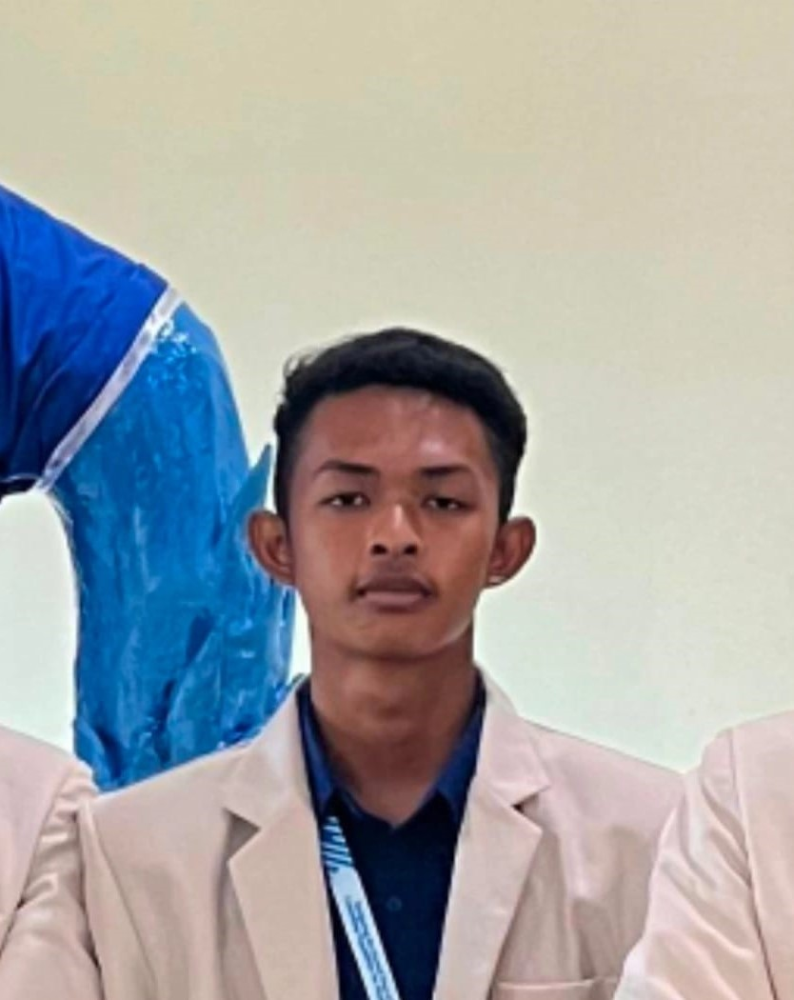
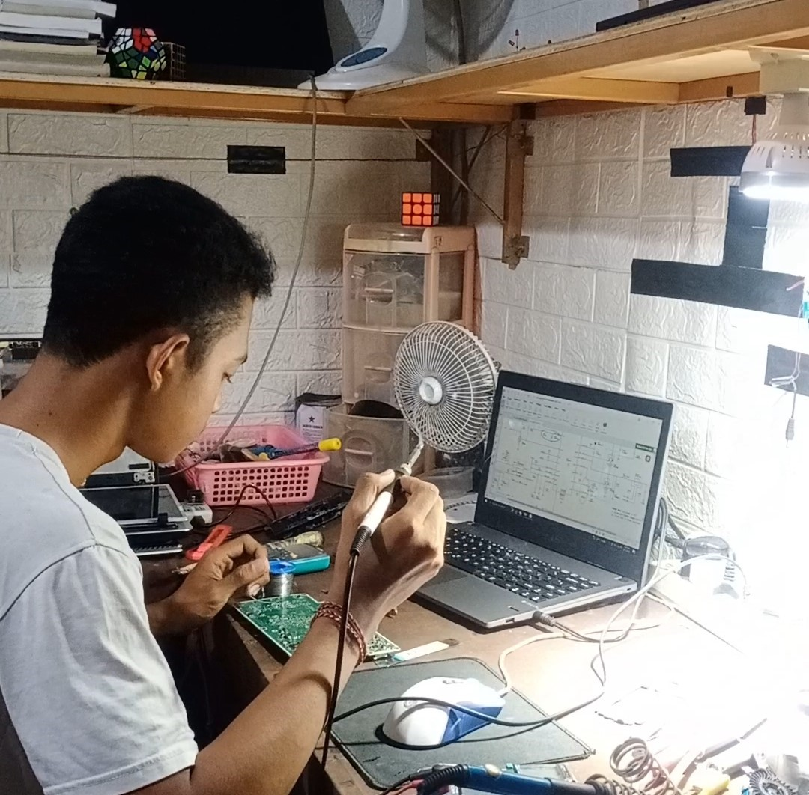

Halo, Saya Satya Anggradika
Selamat datang di portofolio saya.
Selamat Datang di Portofolio Saya!
Perkenalkan, saya Satya Anggradika, Mahasiswa Teknik Elektro dengan minat besar di bidang mikrokontroler, serta service dan perbaikan laptop.
Portofolio ini berisi beberapa proyek yang pernah saya kerjakan, keahlian yang saya miliki, serta cara menghubungi saya.
Silakan telusuri bagian Tentang Saya untuk mengenal saya lebih dalam, atau langsung lihat Proyek yang sudah saya buat!
